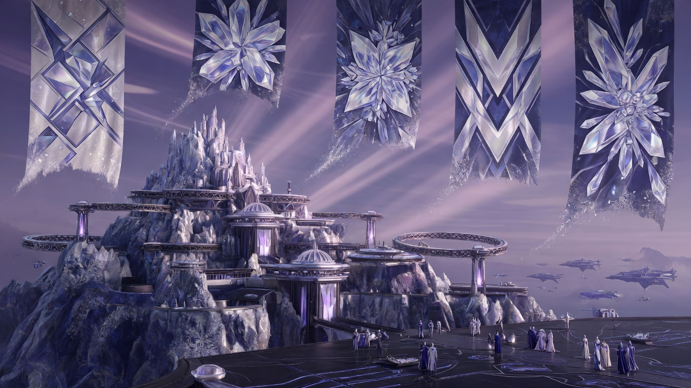
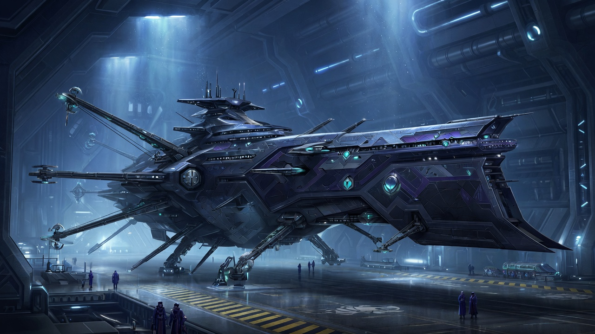
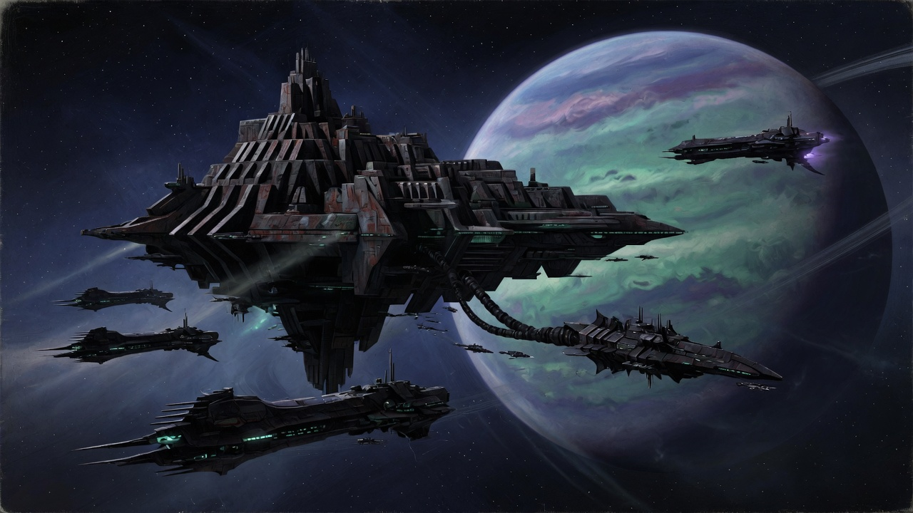
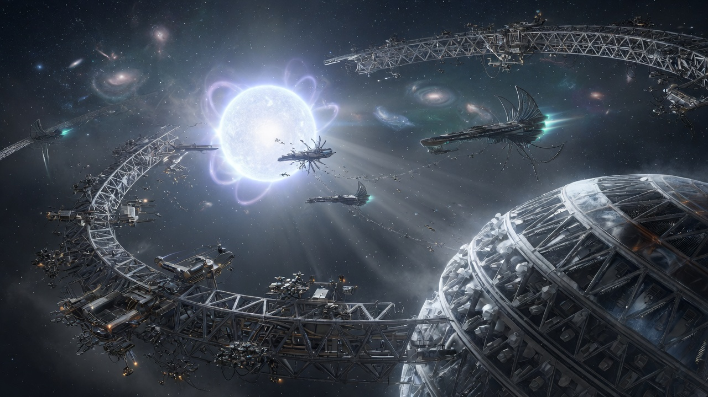
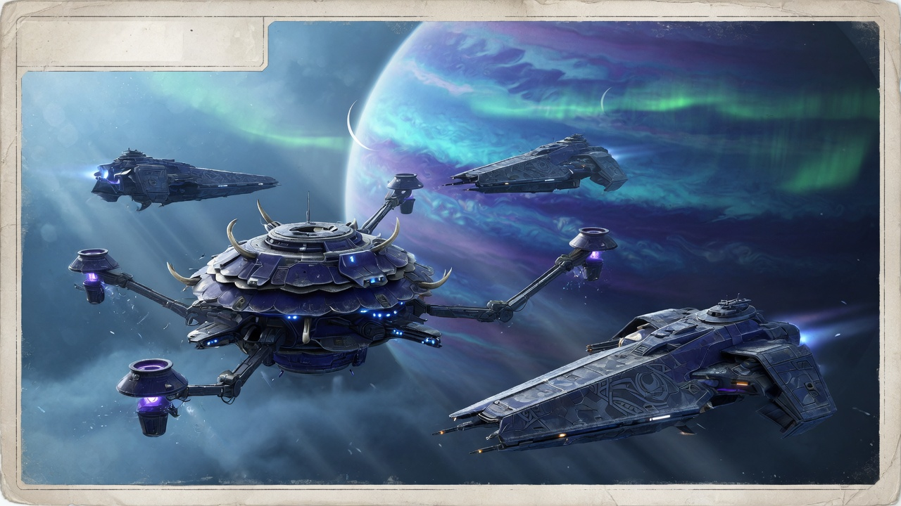
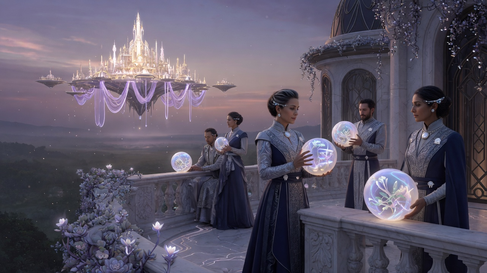

Factions
Powers and peoples of the Centauri Cluster in Exodus: The Archimedes Engine — post-human Celestial dominions, human layers under them, and the movements that push back. Full spoilers throughout.
For how a Dominion differs from a royal house, and for the Crown’s member seats, see the Dominions roster.
Celestial order
-
 Celestials
Celestials
Transhuman clades; mindlines, archons, the Great Game
-
Dominions roster
All Dominions and peer polities, with the Crown’s member seats
Dominions
-

Crown DominionImperial Accord of queens; Kelowan; the HeSea monopoly; the novel’s main stage
-

Heresy DominionHexapod Celestials; Olomo; the Dolod discovery and its science
-
 Talloch-Te Dominion
Talloch-Te Dominion
Nomad traders and shipbuilders; Sahdiah; Verak’s ally
-

Mara YamaNomad citadel Celestials; the external threat used as hardline pretext
-

Gomatu DominionDyson-sphere builders; Dolod’s original destination vector
-
 Uthara Dominion
Uthara Dominion
Annexation target in Helena-Thyra’s expansion plan
-

Ratarajan DominionHoa Quinzu authority; warns the Diligent of a Mara Yama refuel
Ancient powers
-
 Elohim
Elohim
Dawn Era planetary engineers who built the Archimedes Engines; gone as a polity, present everywhere in their works
Human layers
-

UranicsIntermediate humans with neural interfaces; aristocrats ruling by proxy
-
 Changelings
Changelings
Peoples engineered sideways into niches; the Gath and the Moaksha
-
 Travelers
Travelers
Ship owners; Remnant hunters; free agents in the ZPZ trade
-
 Human liberation
Human liberation
Regal Democrats, underground networks, strikes, and the Engine plot
Named people
-
Celestials roster
Queens, archons, court figures
- All characters